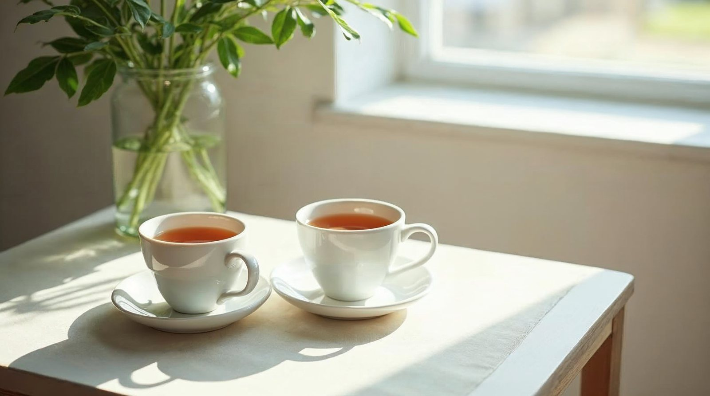
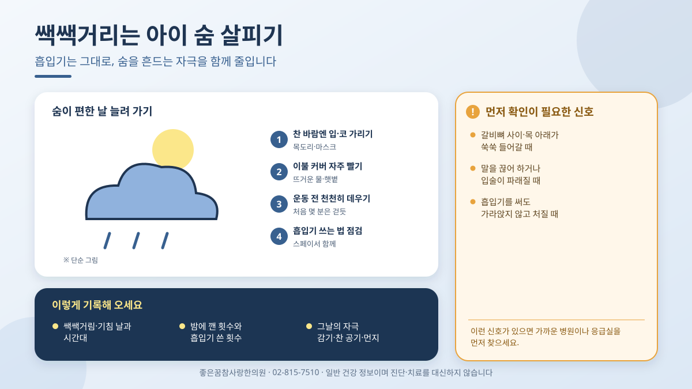

이종호 한의사 감수좋은꿈참사랑한의원 대표원장 (한의사 면허번호 19769)발행 2026-11-26 · 수정 2026-11-26
이 글의 차례
잠든 아이 곁에 누워 있는데 숨소리가 이상합니다. 숨을 내쉴 때마다 가슴 안에서 휘파람 같은 쌕쌕 소리가 납니다. 새벽이 되자 마른기침이 연달아 이어지고, 아이는 뒤척이다 몇 번이나 깹니다. 감기가 거의 나았다고 생각했는데 또 시작인가 싶습니다.
진료실에서 천식 이야기를 꺼내면 부모님 표정이 먼저 굳습니다. "천식이라는 말이 너무 무서워요." "흡입기를 평생 써야 하나요." 이런 걱정을 자주 듣습니다. 저는 그때마다 이름보다 지금 아이의 숨이 어떤 흐름으로 움직이는지를 먼저 같이 보자고 말씀드립니다.
아이의 쌕쌕거림은 모두 천식은 아닙니다. 어린 아기는 기관지가 가늘어 감기만 걸려도 쌕쌕거리기 쉽고, 자라면서 사라지는 경우도 많습니다. 반면 감기와 상관없이 뛰거나 웃거나 찬 공기를 마실 때도 되풀이된다면 천식을 함께 살펴야 합니다.
그래서 저는 숨소리만큼 아이의 하루를 여쭙니다. 언제, 어디서, 무엇을 할 때 쌕쌕거리는지, 밤잠은 어떤지, 코는 막히지 않는지, 피부는 괜찮은지를 차례로 묻습니다. 천식은 기관지 하나의 문제가 아니라 코와 피부, 잠과 생활이 함께 얽혀 있는 경우가 많기 때문입니다.
쌕쌕거림과 천식은 같은 말인가요?
쌕쌕거림은 좁아진 기관지로 공기가 빠져나갈 때 나는 소리입니다. 천식은 기관지가 예민해져 여러 자극에 쉽게 좁아지고, 그 일이 되풀이되는 상태를 말합니다. 그러니 쌕쌕거림은 증상의 이름이고, 천식은 그 증상이 되풀이되는 바탕을 가리킨다고 보시면 됩니다.
세 살 전후의 어린아이는 감기에 걸릴 때만 쌕쌕거렸다가 자라면서 사라지는 경우가 많습니다. 이런 아이를 두고 바로 천식이라고 부르지는 않습니다. 다만 쌕쌕거림이 자주 오고, 가족 중에 알레르기 질환이 있거나 아이에게 아토피나 비염이 함께 있다면 천식으로 이어지는지 지켜보는 기간을 갖게 됩니다.
천식은 쌕쌕거림 없이 기침만으로 드러나기도 합니다. 감기도 아닌데 밤과 새벽에 마른기침이 몇 주씩 이어지고, 뛰고 나면 기침이 터지는 아이라면 기침형 천식을 함께 살펴봐야 합니다.
왜 아이의 기관지는 쉽게 좁아질까요
천식이 있는 아이의 기관지 안쪽 벽은 늘 조금씩 예민한 상태에 있습니다. 감기 바이러스, 찬 공기, 먼지, 집먼지진드기, 꽃가루, 담배 연기, 격한 운동 같은 자극이 오면 벽이 붓고 끈적한 가래가 늘며, 기관지를 감싼 근육이 조여 숨길이 좁아집니다.
아이들은 기관지가 원래 가늘어서, 어른이라면 큰 문제가 없을 정도의 부기에도 숨소리가 거칠어지기 쉽습니다. 그래서 감기가 오면 코와 목을 지나 기관지까지 내려와 쌕쌕거림과 기침이 길게 남는 일이 생깁니다.
밤과 새벽에 더 심해지는 이유도 있습니다. 잠든 사이 몸의 리듬에 따라 기관지가 조금 더 좁아지고, 누운 자세에서 코와 목의 분비물이 뒤로 넘어가며, 이불과 베개의 먼지에 오래 닿기 때문입니다.
한의학에서는 이런 아이를 두고 폐와 코의 예민함, 그리고 감기를 이겨 내는 바탕의 힘을 함께 봅니다. 찬 공기만 마셔도 기침이 터지고 콧물이 맑은 아이, 열이 쉽게 오르고 가래가 끈적한 아이, 입이 짧고 쉽게 지치는 아이는 같은 쌕쌕거림이라도 살피는 방향이 조금 다릅니다.
다른 숨소리와는 어떻게 다른가요?
코가 막혀 나는 그르렁 소리는 숨을 들이쉴 때 코와 목에서 나고, 코를 풀거나 빨아 주면 줄어드는 경우가 많습니다. 쌕쌕거림은 주로 숨을 내쉴 때 가슴 안쪽에서 휘파람처럼 나는 소리라는 점이 다릅니다.
목이 쉬고 컹컹 개 짖는 듯한 기침과 함께 숨을 들이쉴 때 거친 소리가 나는 것은 후두 쪽이 붓는 크룹에서 흔히 보입니다. 갑자기 사레들린 뒤부터 한쪽 숨소리가 이상하다면 작은 물건이 기관지로 들어갔을 가능성도 생각해야 합니다. 이런 경우는 소아청소년과에서 먼저 확인을 받으셔야 합니다.
아기 때 감기와 함께 처음 쌕쌕거린다면 세기관지염일 수도 있습니다. 집에서 이름을 가려내기는 어려우니, 처음 쌕쌕거림을 들으셨다면 소아청소년과 진료로 숨소리를 확인받아 두시길 권합니다.
흡입기는 왜 그렇게 중요하게 여길까요?
천식 치료에는 크게 두 종류의 흡입기가 쓰입니다. 숨이 찰 때 좁아진 기관지를 빠르게 넓혀 주는 것과, 매일 꾸준히 써서 기관지의 예민함을 가라앉히는 것입니다. 어느 쪽을 언제 쓰는지는 처방한 선생님의 안내를 따라 주세요.
흡입기는 약을 직접 기관지로 보내기 때문에 먹는 약보다 적은 양으로 쓰는 장점이 있습니다. 다만 아이는 들이쉬는 박자를 맞추기 어려워 스페이서라는 통을 함께 쓰는 경우가 많습니다. 제대로 들이쉬지 못하면 약이 입안에만 남으니, 쓰는 방법을 가끔 점검해 보세요.
좋아졌다고 매일 쓰는 흡입기를 혼자 멈추면 기관지가 다시 예민해질 수 있습니다. 줄이거나 멈추는 시기는 기록을 들고 처방한 선생님과 상의하시는 것이 좋습니다. 흡입 뒤에는 물로 입을 헹구게 해 주세요.
무엇이 쌕쌕거림을 부르는지 찾아봅니다
아이마다 숨을 흔드는 자극이 조금씩 다릅니다. 기록을 해 보면 대개 몇 가지가 되풀이해서 보입니다. 자주 이야기되는 것들은 이렇습니다.
- 감기, 특히 코가 막히고 가래가 늘 때
- 찬 공기를 갑자기 들이마셨을 때
- 뛰어놀거나 크게 웃고 운 뒤
- 이불을 털거나 먼지가 많은 곳에 있을 때
- 꽃가루와 미세먼지가 많은 날
- 담배 연기나 강한 향, 요리 연기
모든 자극을 피할 수는 없습니다. 하지만 우리 아이에게 유난히 강하게 작용하는 한두 가지를 알면 그 부분만 조금 더 신경 쓰는 것으로도 숨이 흔들리는 날이 줄어들 수 있습니다.
계절마다 달라지는 숨
봄과 가을 환절기에는 일교차와 꽃가루, 미세먼지가 한꺼번에 옵니다. 비염이 함께 있는 아이는 이 시기에 코가 먼저 막히고, 며칠 뒤 밤기침과 쌕쌕거림이 따라오는 흐름을 보이기도 합니다. 이 시기에는 바깥에서 돌아오면 손과 얼굴을 씻기고 옷을 갈아입혀 주세요.
겨울에는 찬 공기와 건조한 실내, 그리고 잦은 감기가 숨을 흔듭니다. 아침에 현관을 나서는 순간 기침이 터지는 아이라면 목도리로 입과 코를 가리고 몇 걸음 천천히 걸으며 숨을 데우게 해 주세요.
여름에는 숨이 편해지는 아이가 많지만, 에어컨 바람을 바로 맞거나 습한 집 안에 곰팡이가 생기면 다시 흔들릴 수 있습니다. 에어컨 필터를 철마다 청소하고, 바람이 아이 얼굴로 바로 가지 않게 방향을 맞춰 주세요.
어린이집과 학교에는 무엇을 알려 두나요?
아이가 낮 동안 머무는 곳의 선생님께 천식이 있다는 것과 어떤 상황에서 숨이 흔들리는지 미리 알려 두세요. 숨찰 때 쓰는 흡입기를 맡겨야 한다면 쓰는 방법과 연락처를 함께 적어 드리면 좋습니다.
체육 시간이나 바깥 놀이가 있는 날에는 아이 스스로 숨이 차면 잠시 쉬어도 된다는 것을 알고 있도록 미리 이야기해 주세요. 친구들 앞에서 혼자 멈추는 것을 부끄러워하는 아이도 있어, 선생님과 미리 신호를 정해 두면 마음이 한결 편해집니다.

부모님 마음도 함께 다독여 주세요
숨이 흔들리는 아이 곁에서 밤을 지새우고 나면, 작은 기침 소리에도 가슴이 철렁하게 됩니다. 그 긴장은 아이에게도 전해집니다. 숨이 찰 때 무엇을 할지 순서를 미리 적어 냉장고에 붙여 두면, 막상 그 순간에 덜 당황하실 수 있습니다.
아이에게도 숨이 답답할 때 어떻게 말하면 되는지 짧은 표현을 정해 주세요. 스스로 몸의 신호를 알아채고 말할 수 있게 되는 것만으로도 아이는 한결 덜 불안해합니다.
먼저 이렇게 여쭙니다
처음 오시면 대략 이런 순서로 여쭙니다. 미리 생각해 오시면 이야기가 수월해집니다.
- 처음 쌕쌕거림을 들은 때와 지금까지의 횟수
- 감기와 상관없이도 쌕쌕거리거나 기침이 나는지
- 밤과 새벽에 기침으로 깨는 횟수
- 쓰고 있는 흡입기와 약, 스페이서 사용 여부
- 아토피나 비염, 음식 알레르기가 함께 있는지
- 집 안에 반려동물이나 담배 연기, 곰팡이가 있는지
모든 질문에 정확히 답하지 못하셔도 괜찮습니다. 흡입기와 약 봉투, 숨소리를 녹음한 짧은 영상만 있어도 이야기의 절반은 시작된 셈입니다.
일상에서 먼저 해 볼 수 있는 것
천식 관리는 약과 함께 숨을 흔드는 자극을 줄이고, 감기를 덜 오래 끄는 생활을 쌓아 가는 일입니다. 아래 가운데 할 수 있는 것부터 골라 보세요.
- 찬 바람이 부는 날 바깥에 나갈 때 마스크나 목도리로 코와 입 가리기
- 이불과 베개 커버는 자주 뜨거운 물로 빨고 햇볕에 말리기
- 집 안 습도를 너무 높지도 낮지도 않게, 곰팡이 생기지 않게 관리하기
- 집과 차 안에서 담배 연기와 강한 방향제 멀리하기
- 운동 전에는 천천히 몸을 데우는 시간 갖기
- 감기 기운이 있을 때는 일찍 재우고 따뜻한 물 자주 마시기
운동을 아예 피하게 할 필요는 없습니다. 오히려 꾸준히 몸을 움직이는 아이가 숨이 덜 흔들리기도 합니다. 처음 몇 분은 천천히 걷듯 시작하고, 찬 공기 속 격한 달리기보다 실내 수영이나 걷기처럼 숨을 조절하기 쉬운 활동부터 해 보세요.
코가 막히면 입으로 숨을 쉬게 되고, 데워지지 않은 찬 공기가 바로 기관지로 들어갑니다. 비염이 함께 있다면 코를 편하게 해 주는 것만으로도 밤 기침이 줄어드는 아이가 있습니다.
한의원에서 함께 살필 수 있는 경우
- 흡입기를 쓰면서도 감기만 걸리면 쌕쌕거림과 기침이 길게 남는 경우
- 비염이나 아토피가 함께 있어 코와 피부, 숨을 같이 살피고 싶은 경우
- 감기를 자주 앓고 회복이 더디며 입이 짧은 경우
- 찬 공기에 기침이 쉽게 터지고 손발이 찬 경우
- 밤기침으로 잠을 설쳐 낮에 쉽게 지치는 경우
좋은꿈참사랑한의원에 오시면 맥을 짚고 숨소리와 코, 목, 피부를 살핀 뒤 잠과 입맛, 땀, 대변을 함께 여쭙니다. 진찰한 내용을 바탕으로 집에서 바꿔 볼 것 하나와 함께 지금 아이에게 맞는 방법을 정합니다.
한약을 상의할 때는 아이의 나이와 체중, 지금 쓰는 흡입기와 먹는 약을 모두 확인하고 신중하게 정합니다. 침이 필요하다고 판단되면 짧고 가볍게 진행하며, 아이가 싫어하면 다른 방법을 찾습니다. 소아청소년과 치료와 흡입기는 그대로 이어 가시면서 나란히 살핀다고 생각해 주시면 됩니다.
이렇게 기록해 오시면 상담이 쉬워집니다
천식은 좋은 날과 나쁜 날이 섞여 있어서, 진료실에서 한 번 들은 숨소리보다 집에서 쌓은 기록이 훨씬 많은 것을 알려 줍니다. 2주에서 한 달 정도 간단히 적어 보세요.
- 쌕쌕거림이나 기침이 있던 날과 시간대
- 밤에 기침으로 깬 횟수
- 숨이 찰 때 쓰는 흡입기를 쓴 날과 횟수
- 감기, 찬 공기, 운동, 먼지 등 그날 있었던 일
- 숨소리를 녹음한 짧은 영상
- 비염이나 피부가 함께 나빠진 날
빠진 날이 있어도 괜찮습니다. 기록을 나란히 놓고 보면 숨이 흔들렸던 날과 생활 사이의 연결이 보이기 시작하고, 그것이 다음 걸음을 정하는 실마리가 됩니다.
오래 함께 지켜보는 숨을 위해
천식이라는 이름은 무겁게 들리지만, 많은 아이들이 약과 생활을 잘 챙기며 친구들과 똑같이 뛰어놀고 운동을 합니다. 자라면서 기관지가 굵어지고 숨이 흔들리는 날이 눈에 띄게 줄어드는 아이도 많습니다.
중요한 것은 숨이 편한 날을 늘려 가는 것입니다. 밤에 깨는 날이 줄었는지, 숨찰 때 쓰는 흡입기를 덜 찾게 되었는지를 한 달 단위로 보세요. 이번 주에는 이불과 베개 커버를 뜨거운 물로 빨아 햇볕에 말리는 일 하나만 정해 보시고, 다음에 오시면 그 사이의 숨 기록부터 함께 펼쳐 보겠습니다.
이런 증상은 먼저 확인이 필요합니다
- 숨 쉴 때 갈비뼈 사이나 목 아래가 쑥쑥 들어가고 말을 끊어서 하거나 입술이 파래지는 경우
- 숨찰 때 쓰는 흡입기를 써도 가라앉지 않고 아이가 축 처지거나 누워 있지 못하는 경우
이런 신호가 있으면 한의원보다 가까운 병원이나 응급실을 먼저 찾으세요.
함께 읽으면 좋은 글
- 천식으로 흡입기를 쓰고 있을 때 한의원에서는 무엇을 함께 살피나요?
- 아이가 아침마다 재채기와 맑은 콧물, 코막힘을 달고 사는 알레르기 비염은 어떻게 살피나요?
- 아이가 감기에 자주 걸리고 코가 막힐 때는 어떤 점을 살펴보나요?
- 마른기침과 가래 섞인 기침은 어떻게 구분해서 기록하나요?
- 미세먼지 많은 날 목이 따갑고 기침이 날 때는 어떻게 지내면 좋을까요?

여쭙는 것
- 처음 쌕쌕거림을 들은 때와 지금까지의 횟수
- 감기와 상관없이도 쌕쌕거리거나 기침이 나는지
- 밤과 새벽에 기침으로 깨는 횟수
생활에서 해 볼 것
- 찬 바람이 부는 날 바깥에 나갈 때 마스크나 목도리로 코와 입 가리기
- 이불과 베개 커버는 자주 뜨거운 물로 빨고 햇볕에 말리기
- 집 안 습도를 너무 높지도 낮지도 않게, 곰팡이 생기지 않게 관리하기
한의원에서 함께 살필 것
- 흡입기를 쓰면서도 감기만 걸리면 쌕쌕거림과 기침이 길게 남는 경우
- 비염이나 아토피가 함께 있어 코와 피부, 숨을 같이 살피고 싶은 경우
- 감기를 자주 앓고 회복이 더디며 입이 짧은 경우
먼저 확인이 필요한 신호
- 숨 쉴 때 갈비뼈 사이나 목 아래가 쑥쑥 들어가고 말을 끊어서 하거나 입술이 파래지…
- 숨찰 때 쓰는 흡입기를 써도 가라앉지 않고 아이가 축 처지거나 누워 있지 못하는 경우
한눈에 보는 표
| 구분 | 핵심 |
|---|---|
| 여쭙는 것 | 처음 쌕쌕거림을 들은 때와 지금까지의 횟수 감기와 상관없이도 쌕쌕거리거나 기침이 나는지 |
| 생활에서 해 볼 것 | 찬 바람이 부는 날 바깥에 나갈 때 마스크나 목도리로 코와 입 가리기 이불과 베개 커버는 자주 뜨거운 물로 빨고 햇볕에 말리기 |
| 한의원에서 함께 살필 것 | 흡입기를 쓰면서도 감기만 걸리면 쌕쌕거림과 기침이 길게 남는 경우 비염이나 아토피가 함께 있어 코와 피부, 숨을 같이 살피고 싶은 경우 |
| 먼저 확인이 필요한 신호 | 숨 쉴 때 갈비뼈 사이나 목 아래가 쑥쑥 들어가고 말을 끊어서 하거나 입술이 파래지는 경우 숨찰 때 쓰는 흡입기를 써도 가라앉지 않고 아이가 축 처지거나 누워 있지 못하는 경우 |
자주 묻는 질문
흡입기를 쓰면서 한의원 진료를 같이 받아도 되나요?
함께 받으셔도 됩니다. 흡입기와 약은 처방한 선생님의 안내대로 그대로 이어 가시고, 쓰는 약을 알려 주시면 그에 맞춰 진료 방향을 정합니다.
아기 때 쌕쌕거렸으면 천식이 되는 건가요?
어린아이는 감기에만 쌕쌕거렸다가 자라면서 사라지는 경우가 많습니다. 쌕쌕거림이 되풀이되거나 비염, 아토피가 함께 있다면 소아청소년과와 함께 흐름을 지켜보세요.
천식이 있으면 운동을 하지 말아야 하나요?
피할 필요는 없습니다. 천천히 몸을 데우고 시작하고, 찬 공기 속 격한 운동은 조절하세요. 운동 전 흡입기 사용이 필요한지는 처방한 선생님과 상의해 정하시면 됩니다.
아이도 한약을 먹을 수 있나요?
아이의 나이와 체중, 지금 쓰는 흡입기와 약을 모두 확인한 뒤 신중하게 정합니다. 진찰 후 필요하다고 판단될 때 상의하며, 먹기 어려워하면 다른 방법을 함께 찾습니다.
좋아졌는데 매일 쓰는 흡입기를 끊어도 되나요?
혼자 멈추면 기관지가 다시 예민해질 수 있습니다. 숨 기록을 가지고 처방한 선생님과 줄이는 시기와 방법을 상의해 정하세요.
좋은꿈참사랑한의원은 재진 때 지난번 이야기부터 이어서 여쭙니다. 진료시간과 예약은 오시는 길에서 확인하세요.
어디서 상담받을 수 있나요?
좋은꿈참사랑한의원은 서울 동작구 만양로2길 2 신성빌딩 3층·5층(서울 동작구 상도동, 7호선 상도역 3번 출구 근처)에 있습니다. 한의사 3명(이종호 대표원장, 조영기 수석진료원장, 정원영 진료원장)이 진료합니다. 진료시간은 평일 09:30~20:00(점심 13:00~14:00), 토·일·공휴일 09:30~15:00이며, 방문 전 전화로 확인을 권합니다. 예약은 네이버 예약, 카카오톡 상담, 전화 02-815-7510로 받습니다.
이 글은 일반적인 건강 정보이며 개인의 진단이나 치료를 대신하지 않습니다. 증상이 있거나 복용 중인 약이 있다면 진료를 통해 확인하세요. 치료 효과는 개인마다 다를 수 있습니다.
작성 기준: 일반적으로 알려져 있는 건강 정보를 참고해 정리했습니다(대표원장 감수). 증상 기록은 1~2주 동안 하루 1회, 비슷한 시간에 적어 오시면 지난 상태와 비교하기 쉽습니다.